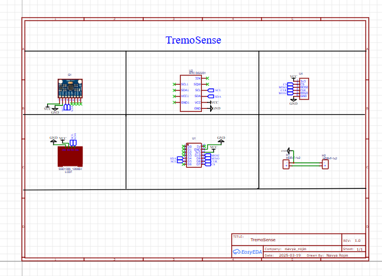
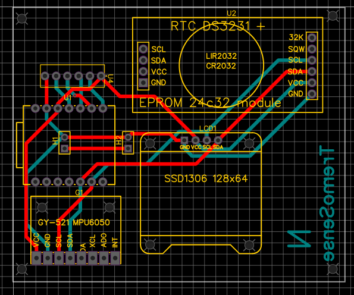
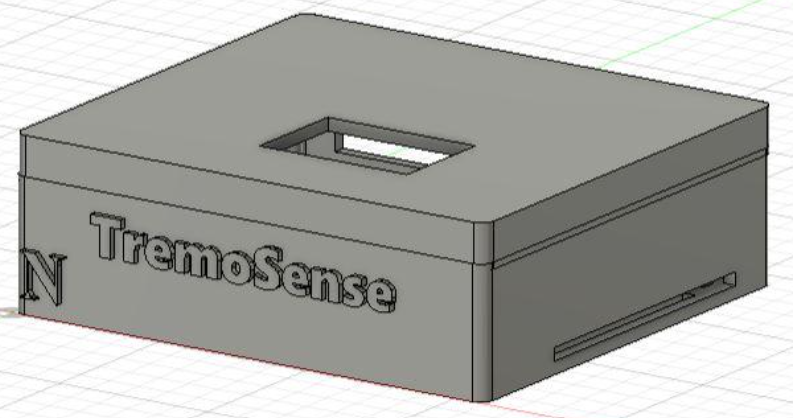

TremoSense
Wearable system to measure tremor frequency and amplitude from the wrist for Parkinson’s medication efficacy analysis.
Overview
TremoSense is a custom embedded system designed to capture and analyse tremor characteristics such as frequency and amplitude. By recording motion from the wrist, it aims to provide objective, quantifiable metrics to support clinicians when evaluating Parkinson’s disease treatment.
Key features
- High-resolution IMU for fine hand-tremor sensing
- Feature extraction for tremor frequency and amplitude
- Compact, wearable-friendly PCB form factor
- Low-power microcontroller for real-time data acquisition
- Support for data logging / external analysis
PCB Schematic
PCB layout
3D board view
Applications
- Parkinson’s disease tremor monitoring
- Medication efficacy assessment
- Wearable healthcare research devices
- Clinical data collection & studies